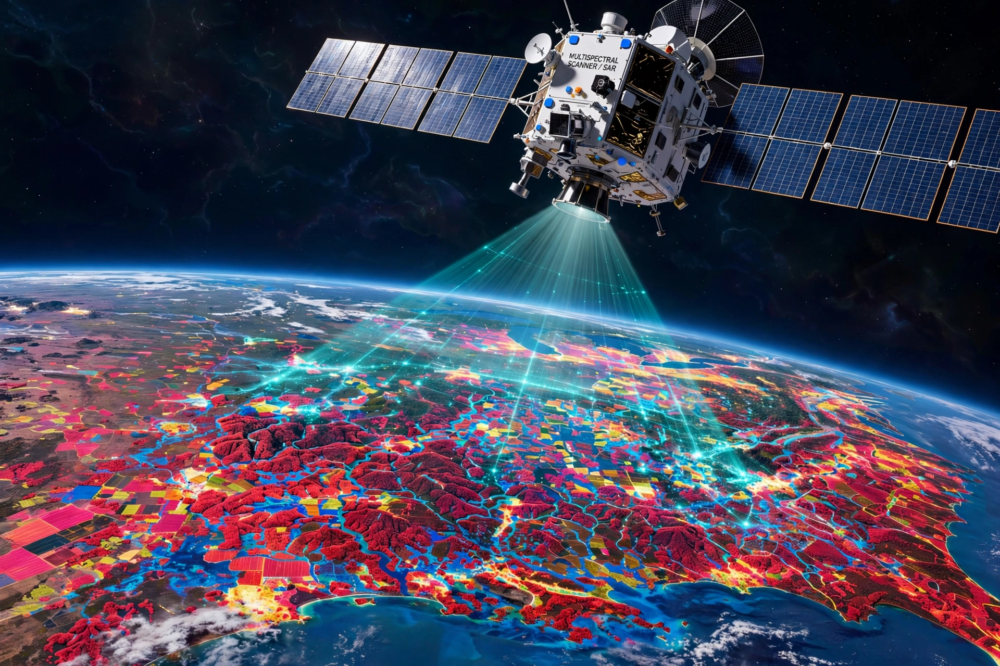

Remote sensing is the acquisition of information about an object or phenomenon without making physical contact with it, generally using sensors on aircraft or Earth-observation satellites. It is used in geography, land surveying, weather forecasting, agriculture and many Earth-science disciplines.
Passive sensors detect natural radiation emitted or reflected by the object, as in optical and thermal-infrared imagery. Active sensors, such as radar and lidar, emit energy and measure the return, allowing imaging through cloud and at night. Key image characteristics are spatial, spectral, temporal and radiometric resolution.
Programme series such as NASA's Landsat (since 1972) and the EU's Copernicus Sentinel satellites monitor deforestation, urban growth, crop health, ocean colour, ice-sheet change and natural disasters. Data are processed with geographic information systems (GIS) and machine-learning classification.